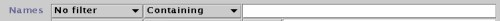

Probe Name contains "RNA" PROB_2 > 0.01 TIME_2 < 3.5
There are two global rules, and one optional rule for each Measurement. All of the rules are combined using a logical AND operation, this means only genes which obey all of the rules will be displayed.
At the bottom of the window the percentage of Spots which are trapped by the filter is shown in red and the percentage of Spots which are not trapped is shown in green. Note that the percentages only reflect the filtering that is done by this filter, and do not take into account any filtering being done by other filter plugins that are also active.
As with all filter plugins, closing the plugin's window deactives the filter (but iconifying it does not).
Name filtering....
The first rule applies the to the names, and can be specify that the name must include some sequence of characters, or must not include some sequence. Select which of the names to use (either Probe, Gene(s) or Spot) and select which matching criterion to use.
As you type characters into the edit field, the filter is continuously updated and spots are removed or displayed based whether whether their name matches the rule.
Value filtering....(global)
The second rule applies to the all of numerical values associated with each spot. These values are grouped based on the type assigned to them in the Measurements panel. You can select between requiring "No value" "Any value" (i.e. 1 or more) or "All values" to conform to the rule.
The operand selection allows to you to choose how to compare the numercial values with some constant value that you supply. The options are:
| = | equal to |
| != | not equal to |
| >= | greater than or equal to |
| <= | less than or equal to |
| > | greater than |
| < | less than |
| <> | in this range (+/-) |
| !<> | not in this range (+/-) |
The edit field to the right of the operand selection is where you enter the constant value to compare the numercial values to.
Example:To exclude any spot with a missing Expression value in any of it's Measurements, set the rule to
"Expression" "No values" "=" "NaN"
(NaN is the special value used to represent a missing number)
To exclude any spot with a very high value, set the rule to
"Expression" "Any value" ">" "100000"
Value filtering....(per Measurement rules)
The bottom part of the Filter panel contains controls for filter rules to apply to each of the individual Measurements. Each rule can be enabled or disabled separately using the checkbox next to it's name.
The operand selection and edit field for the constant value are the same as for the global value filter. The rule is applied only to this the Measurement, and only if the rule has been enabled.
Note: This behaviour is different to that of versions prior to 1.0.4
The special value 'NaN' (not-a-number) is used to represent a value which is unknown or missing.
All comparisions in which a NaN value is tested against any non-NaN value will be false, for example "NaN > 3", "NaN >= -2000", "400 < NaN" and "NaN > NaN" are all false.
NaN values are equal to other NaN values, for example "NaN >= NaN", "NaN <= NaN" and "NaN = NaN" are all true.
NaN values are not equal to any other value, for example "NaN = 1.0" is false.
The special values 'Infinity' and '-Infinity' represent positive and negative infinity respectively.
Infinity values behave like extreme versions of normal values, so Infinity is greater than any other number, and -Infinity is less than any other number.
Magnitude comparisons of NaN values with Infinity values are always false, for example "Infinity < NaN" and "NaN >= -Infinity" are both false. However, equality tests between NaN values with Infinity values behave as normal, so "Infinity = NaN" is false and "-Infinity != NaN" is true.
A complete description of how comparisons with NaN, -Infinity and -Infinity values work can be found here.
See also: